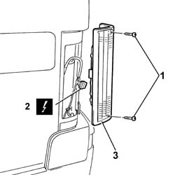

5540A44 L/H OR R/H TAIL LIGHT (ONE) - R+R
- Path
- Procedures > 55 ELECTRICAL EQUIPMENT > 5540 EXTERIOR LIGHTING > 5540A LIGHTING > 5540A44 L/H OR R/H TAIL LIGHT (ONE) - R+R
- Kind
- repair procedure (removal / refitting; the operation number is the code)
- Applies to
- all engines; all production periods
- Interactive page
- https://sloeber94.github.io/elrnDB-fDct/en/#/244001368
Applies to: all engines; all production periods
 Removing
Removing
 Refitting
Refitting- Disconnect the negative battery terminal.
1. Undo the fixing bolts.
2. Disconnect the electrical connector.
 | Description | Connector |
|---|---|---|
2 | Left rear light cluster | F030 |
3. Remove the rear light cluster.

Applies to: all engines; all production periods
Refitting
Removing- Connect the electrical connector for the light cluster.
| Description | Connector |
|---|---|---|
. | Left rear light cluster | F030 |
- Insert the light cluster in the housing in the bodyshell.
- Secure the rear light cluster to the bodyshell, tightening the fixing bolts.
- Connect the negative battery terminal.
Topics that link to this page (11)
- I01 SIDE LIGHTS/NO. PLATE LIGHTS NOT WORKING
- I02 PARKING LIGHTS NOT WORKING
- I03 NUMBER PLATE LIGHT NOT WORKING
- I15 (SIDE) BRAKE LIGHTS NOT WORKING
- I17 REVERSING LIGHTS NOT WORKING
- I21 REAR FOG LAMPS NOT WORKING
- I27 REAR FOG LAMP (ONE) NOT WORKING
- 5040A58 PIPE FROM EXPANSION VALVE TO COMPRESSOR - R+R
- 5505A90 REAR WIRING BUNDLE - R R OR REPLACE
- 5540A74 BULB OF A SIDELIGHT OR FOG LAMP OR REVERSING LIGHT IN A TAIL-LIGHT, LH OR RH R R
- 7210E68 REAR BUMPER - SIDE ELEMENT